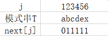
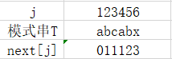

数据结构学习——串
数据结构串的学习笔记🎈
1.定义
串(string) : 是由多个字符组成的有限序列，又名字符串。一般记为 s=”a1a2……an”(n>=0)。
空格串（Blank string）：是指包含空格的串。注意它与空串的区别，空格串是有长度的，而且可以不止一个空格;零个字符的串称为空串（Null string）,它的长度为零可以直接用 “” 表示。
子串（SubString）与主串（PriString）：串中任意个数的连续字符组成的子序列称为该串的子串，相应地，包含子串的串称为主串。
子串在主串中的位置就是子串的第一个字符在主串中的序号。
2.字符串的比较
串的比较是通过组成串的字符之间的编码来进行的，而字符的编码指的是字符在对应字符集中的序号。
ASCII编码(7位二进制)
常见ASCII码的大小规则：0 ~ 9 < A ~ Z < a ~ z。
- 数字比字母要小。如 “7”<“F”；
- 数字0比数字9要小，并按0到9顺序递增。如 “3”<“8” ；
- 字母A比字母Z要小，并按A到Z顺序递增。如“A”<“Z” ；
- 同个字母的大写字母比小写字母要小32。如“A”<“a” 。
几个常见字母的ASCII码大小： “A”为65；“a”为97；“0”为 48
Unicode编码(16位二进制)
前256个字符与ASCII码完全相同。
对于两个不相等的串，判定它们大小的方法：
给定两个串：s=”a1a2……an” , t=”b1b2……bm”,当满足以下条件之一时，s<t。
n<m,且ai = bi (i=1,2,……,n)。
例如但s=”hap”,t=”happy”,就有s<t。因为t比s多出了两个字母。存在某个k<=min(m,n),使得ai=bi (i=1,2,……,k-1), ak<bk。
例如当s=”heppen”,t=”happy”,因为两串的前4个字母均相同,而两串第5个字母(k值),字母e的ASCII码是101,而字母y的ASCII码是121,显然e<y,所以s<t。3.串的抽象数据类型
ADT $~~~$串（string)
Data
$~~~~~~$串中元素仅由一个字符组成，相邻元素具有前驱和后继关系。
Operation- $~~~~~~$StrAssign(T,*chars):生成一个其值等于字符串常量chars的串。
- $~~~~~~$StrCopy(T,S):串S存在，由串S复制得串T.
- $~~~~~~$ClearString(S):串S存在，将串清空。
- $~~~~~~$StringEmpty(S):若串S为空，返回true,否则返回false.
- $~~~~~~$StrLength(S):返回串S的元素个数，即串的长度。
- $~~~~~~$StrCompare(S,T):若S>T,返回值＞0,若S=T,返回0,若S<T,返回值＜0
- $~~~~~~$Concat(T,S1,S2):用T返回由S1和S2联接而成的新串。
- $~~~~~~$SubString(Sub,S,pos,len):串S存在，1≤pos≤StrLength(s). 且0≤len≤StrLength(S)-pos+1,用Sub返 回串S的第pos 个字符起长度为len的子串。
- $~~~~~~$Index(S,T,pos):串S和T存在，T是非空串，1≤pos≤StrLength(s).若主串S中存在和串T值相同的子串，则返回它在主串S中第pos 个字符之后第一次出现的位置，否则返回0.
- $~~~~~~$Replace(S,T,V):串S、T和V存在，T是非空串。用V替换主串S中出现的所有与T相等的不重叠的子串。
- $~~~~~~$StrInsert(S,pos,T):串S和T存在，1≤pos≤StrLength(S)+1.在串S的第pos个字符之前插入串T.
- $~~~~~~$StrDelete(S,pos,len):串S存在，1≤pos≤StrLength(S)-len+1.从串S中删除第pos 个字符起长度为len的子串。
endADT
4.串的储存结构
串的存储结构分为两种：顺序存储结构、链式存储结构
4.1串的顺序存储结构
静态顺序存储结构——数组
一组地址连续的存储单元来存储串中的字符序列的。按照预定义的大小，为每个定义的串变量分配一个固定长度的存储区。
优点：使用方便 ，查询效率比链表高，内存为一连续的区域缺点：大小固定，不适合动态存储，不方便动态添加
动态顺序存储结构——堆
- C语言：由动态分配函数malloc()和 free() 管理
- C++：使用new() 和 delete()
- Java：ArrayList()
$~~~~~~~~~~~~~~~~$| get $~~~~~~~~~~~~~~~~~$从里面拿东西
$~~~~~~~~~~~~~~~~$| add $~~~~~~~~~~~~~~~~$向里面加东西，返回值代表是否成功；
$~~~~~~~~~~~~~~~~$| remove $~~~~~~~~~~~$从里面删除东西
$~~~~~~~~~~~~~~~~$| size $~~~~~~~~~~~~~~~~$获取集合的长度4.2串的链式存储结构

串的链式存储结构除了在连接串与串操作时有一定方便之外，总的来说不如顺序存储灵活，性能也不如顺序存储结构好。
/*尾排链表*/
#include<stdio.h>
#include<stdlib.h>
struct ListNode{
int data;
struct ListNode *next;
};
struct ListNode * createList(){
struct ListNode * head = NULL;
struct ListNode * prev = NULL;
struct ListNode * cur = NULL;
int temp,count = 1;
scanf("%d",&temp);
while(temp != -1){
if(count == 1){
head = (struct ListNode*)malloc(sizeof(struct ListNode));
head->data = temp;
prev = head;
cur = head;
}else{
prev = (struct ListNode*)malloc(sizeof(struct ListNode));
prev->data = temp;
cur->next = prev;
cur = prev;
}
count++;
scanf("%d",&temp);
}
cur->next = NULL;
return head;
}
void scanList(struct ListNode *head) {
struct ListNode *p = head;
while(p != NULL) {
printf("%d\t",p->data);
p=p->next;
}
return;
}
int main(void){
struct ListNode *head = createList();
scanList(head);
return 0;
}
5.朴素的模式匹配算法（BF匹配模式）
5.1思路
- 从主串的第一位开始和子串第一位比较。
- 如果相同，继续比较子串和主串的下一位，如果将子串比较完毕都成功，说明匹配成功，子串在主串第一位。
- 如果中间有一个不匹配，i回退到上次匹配首位的下一位，j回退到0。
5.2图示
5.3代码展示
#include <stdio.h>
#include <string.h>
/*
S[]为主串
T[]为子串
*/
int Index(char S[],char T[],int pos)
{
int i = pos; /*i用于王串S中当前位置下标，若pos不为1*/
/*则从pos 位置开始匹配*/
int j = 0; /*j用于子串T中当前位置下标值*/
while(i < strlen(S) && j < strlen(T)) /*若i小于S长度且j小于T的长度时循环*/
{
if(S[i]==T[j]) /*两字母相等则继续*/
{
i++;
j++;
}
else /*指针后退重新开始匹配*/
{
i=i-j+1; /*i退回到上次匹配首位的下一位*/
j = 0;
}
}
if(j == strlen(T))
return i - strlen(T) + 1;
else
return 0;
}
int main()
{
char a[]="ababcabcacbab";
char b[]="abcac";
int number = Index(a ,b ,0);
printf("%d",number);
return 0;
}
6.KMP模式匹配算法
即 克努特—莫里斯—普拉特算法。
还是同BP匹配算法
S[ ]为主串，T[ ]为子串。
6.1 next函数
我们把T串各个位置的j值的变化定义为一个数组next，那么next的长度就是T串的长度。于是我们可以得到下面的函数定义：
6.2 next函数推导
S=”abcababca”
- 例1：
T=”abcdex”

- 当j=1时，next[1]=0;
- 当j=2时，j由1到j-1就只有字符”a”，属于其他情况，next[2]=1；
- 当j=3时，j由1到j-1串是”ab”，显然”a”与”b”不相等，属于其他情况，next[3]=1；
- 以后同理，所以最终此T串的next[j]为011111。
- 例二：
T=”abcabx”

- 当j=1时，next[1]=0;
- 当j=2时，同上例说明，next[2]=1;
- 当j=3时，同上，next[3]=1;
- 当j=4时，同上，next[4]=1;
- 当j=5时，此时j由1到j-1的串是”abca“，前缀字符”a”与后缀字符”a”相等（前缀用下划线表示，后缀用斜体表示），因此可推算出k值为（由’p1…pk-1’=’pj-k+1…pj-1’，得到p1=p4），因此next[5]=2;
- 当j=6时，j由1到j-1的串是”abcab”，由于前缀字符”ab”与后缀”ab”相等，所以next[6]=3。
我们可以根据经验得：如果前后缀一个字符相等，k值是2，两个字符k值是3，n个相等k值就是n+1。
6.3 KMP模式匹配算法实现
代码展示
/*通过计算返回子串s的next数组*/
void get_next(char T[], int *next)
{
int i, j;
i = 1;
j = 0;
next[1] = 0;
while(i < T[0])/*T[0]表示串t的长度*/
{
if(j == 0 || T[i] == T[j])/*T[j]表示前缀的单个字符,T[i]表示后缀的单个字符 */
{
++ i;
++ j;
next[i] = j;
}
else
j = next[j];/*若字符不相同，则j值回溯*/
}
}
/*返回子串T在主串S中第pos个字符之后的位置。若不存在，则函数值返回0*/
/*s非空， 1 <= pos <= strlen(S)*/
int Index_KMP(char S[], char T[], int pos)
{
int i = pos;
int j = 1;
int next[255];
get_next(T, next);
while (i <= S[0] && j <= T[0])
{
if(j == 0 || S[i] == T[j])
{
++ i;
++ j;
}
else
j = next[j];
}
if(j > T[0])
return i-T[0];
else
return 0;
6.4 KMP模式匹配算法改进
为避免KMP模式匹配算法的多次回溯匹配（例：主串s = “aaaabcde”, 子串 t = “ aaaaax”），我们需对原来的KMP模式匹配算法加以改进。
代码展示
void get_nextval(char T[], int *nextval)
{
int i, j;
i = 1;
j = 0;
nextval[1] = 0;
while(i < T[0])/*T[0]表示串t的长度*/
{
if(j == 0 || T[i] == T[j])/*T[j]表示前缀的单个字符,T[i]表示后缀的单个字符 */
{
++ i;
++ j;
if(T[i] != T[j])
nextval[i] = j;
else
nextval[i] = nextval[j];
}
else
j = nextval[j];/*若字符不相同，则j值回溯*/
}
}
实现匹配算法，只需要将 get_next(T, next) 改为 get_nextval(T, next)。